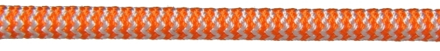

- Code
- Polaris
- Diameter
- 10 to 12 mm
- Construction
- Kernmantle

About the product
Always taking quality and safety to higher places, Polaris is used and approved by several names in the work-at-height segment. See below what those who know the subject have to say:
Applications in the Work at Height line
- Work at Height
Specifications by diameter
- Circ. (in)
- Nominal mass (kg/200 m)
- Minimum breaking load (kgf)
Schematic cross-section of the construction, to scale with the coin.
Polaris Semi-static Rope · Polaris
Technical specifications
3 diameters. Select a row to see its values in the panel above.
| Diam. (mm) | Circ. (in) | Nominal mass (kg/200 m) | Minimum breaking load (kgf) |
|---|---|---|---|
| 10 | 1 1/4 | 16 | 3,222 |
| 11 | 1 3/8 | 18 | 3,814 |
| 12 | 1 1/2 | 22 | 4,093 |
Testimonials
What professionals say
“Always supporting Brazilian industry, after 30 years using ropes in vertical activities I found in Polaris ropes the satisfaction of using a high-quality, high-performance product, whether in Safe Work in Vertical Environments training or in Vertical Rescue training. I use and recommend Polaris ropes.”
“The Polaris rope reflects the long experience and concern for quality that made CSL a renowned manufacturer over its 82 years. Besides performing well, Polaris stands out for its distinctive visual identity and design, keeping the quality of its textile structure, especially when used with rope access tools. Another highlight is the number of tests and documents (including the leaflets) that set it apart from other ropes on the market. It was also developed within technical parameters and remains in a process of continuous improvement. It is worth remembering that, despite the evident quality of this rope, the professional who uses it must be qualified and always up to date, bearing in mind that work at height carries a high intrinsic risk.”
“The POLARIS rope was tested in caving and met all our expectations, having been compared with internationally renowned brands. It stayed supple at all times for tying any kind of knot. We used the POLARIS rope to explore pits and on waterfalls, where its behaviour was also satisfactory. At the end of the year a zip line of about 80 metres was set up for religious festivities in the town of Iporanga, and again we had no problems with the material, even using several types of descenders (figure eight, ATC, Stop, Simple, UIAA).”
“Since we came to know Polaris ropes they have become our only choice, both for rope access work and for difficult-access rescues. For those who expect a lot from a rope, we recommend Polaris ropes.”
Work at Height line
Other products in this line
- Polaris Accessory Cord5 to 8 mm
- Polaris Safetyline12 mm